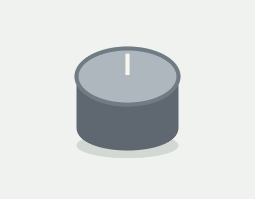
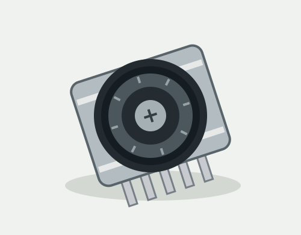

Aluminum Encoder Knob
CG-2106 • INPUT
$4.25
Demo: available
COMPONENTS & PARTS / INPUT
PRODUCT ID: CG-2108

Original illustration • illustrative dimensions and specifications
$14.95
Demo availability: available sample
A tactile wheel for exploring compact controls. Rotate, nudge in four directions, or press the center.
Review demo cart →No transaction. Quantities are sample values, not live stock.
One small interface, several ways to interact. The Orbit sample combines a detented scroll wheel with directional switches and a central push contact. It is a starting point for a menu selector, a desk controller or an experimental instrument.
This fictional bare component needs a suitable board, connections and software. The optional knob is a separate sample item. No generic size or color variants are offered.
Illustrative data only; do not use as real engineering guidance.
| Interface | Mechanical contacts; incremental quadrature |
|---|---|
| Inputs | Rotation, four directions, center press |
| Sample footprint | 28 × 23 mm |
| Included | One encoder; board and knob separate |
Two contact channels change in sequence as the wheel turns. In a real build, consult the actual part's datasheet and debounce its contacts. This demo provides no downloadable datasheet or external tutorial.
Demo cart stores only product IDs and quantities in this browser. If storage is blocked, this page uses temporary memory; it resets on navigation.